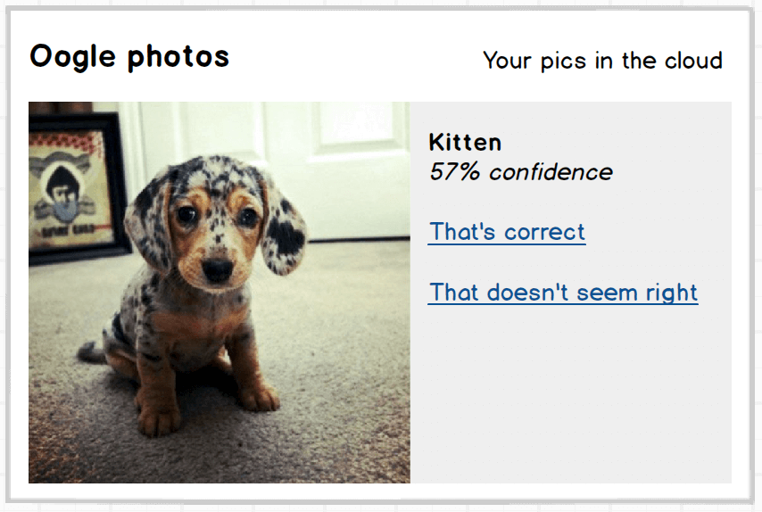
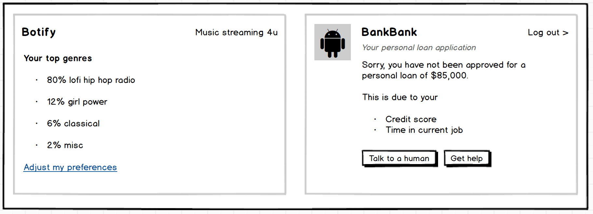
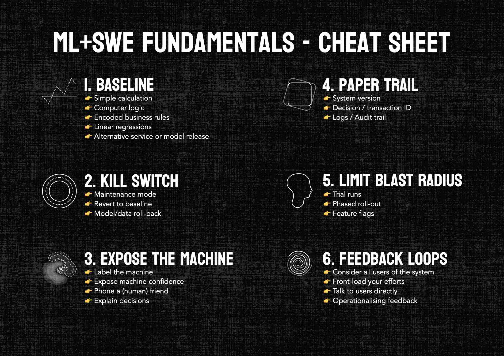

ok, doomer
👋
Core assumptions
- That we could unintentionally build, or luck-into sentient ML models with intelligence on-par with or greater than humans
- That these models would want to exterminate us, at worst, and enslave or oppress us, at best.
Geoff believes LLMs are smarter than I believe they are, and he's a little more optimistic than I am about how they might get us to human-level AI.— Yann LeCunn
Ontological debate
"Worrying about AI evil superintelligence today is like worrying about overpopulation on the planet Mars. We haven't even landed on the planet yet!"— Andrew Ng
I'm disappointed by a lot of this discussion about existential risk; now they even call it literal "extinction." It's sucking the air out of the room.Kyunghyun Cho
the nerd rapture
Long-form reads
-
Towards AGI, what's missing
https://mark-riedl.medium.com/toward-agi-what-is-missing-c2f0d878471a -
Deep Learning and AGI: still a long way to go
https://arxiv.org/pdf/2203.14963.pdf
How do we prep for the
AI-pocalypse?
Same stuff we should be doing,
even if it doesn't happen 🤪
Software fundamentals
Practical, cheap, easy*
*Smol caveat
Baseline
The weather prediction algorithm
\[\begin{aligned} t = \frac {today + lastyear}{2} \end{aligned} \]
Broad-sense baseline
- A simple calculation
- Computer logic
- Encoded business rules
- Linear regressions
- Alternative service or model release
Kill switch

Case study
Knightmare: A DevOps Cautionary Tale
This is the story of how a company with nearly $400 million in assets went bankrupt in 45-minutes because of a failed deployment.dougseven.com/2014/04/17/knightmare-a-devops-cautionary-tale/
Maintenance mode
Graceful degradation
Revert to your baseline
System roll-back
- Version control on your model and training data?
- Doing careful release management?
- If yes to #1 and preferably #2, you could revert to a previous working state, rather than taking it down
Expose the machine
Label the machine
Expose machine confidence
Phone a (human) friend
Explain machine decisions
Paper trail
Provide a decision record
- System version
- Decision / transaction ID
- Logs / Audit trail
Decision recourse
What do system operators need to make a grounded assessment of the decision?
Limit blast radius
Trial run(s)
- Select the group carefully
- Communicate with them intensively
- Assume your system will fail
Phased roll-out
- Break your audience up into chunks
- Communicate with them intensively
- Assume your system will fail
Feature flags
Hide experimental features in prod
(until they're ready to
go-live)
Feedback loops
Consider all users of your system
- Customer users (pay for the system)
- Operator users (admins)
- Training users (data labelling)
- Classified users (system classifies or predicts)
- End users (native or web apps)
Front-load your feedback efforts
Talk to users directly
- Create a shared slack, discord, group chat
- Embed users in your team, or vice-versa
- Stay curious
- Listen to all signals - verbal and non-verbal
- Ask about pain points and successes
- Don't ask for design or solutions
Operationalising feedback
- Model re-training
- Define acceptable thresholds
- Send warnings and alerts
- Implement kill-switch
A quick recap
- Baseline
- Kill switch
- Expose the machine
- Paper trail
- Limit the blast radius
- Feedback loops
Cheat Sheet
Thank you
Links
Cheat Sheet 👉
summerscope.github.io/slides/ok-doomer/img/cheatsheet.pdf
Slides 👉
summerscope.github.io/slides/ok-doomer
LinkedIn 👉
linkedin.com/in/summerscope
Github 👉
github.com/summerscope
Email 👉 summerscope @ gmail dot com